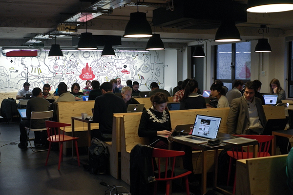
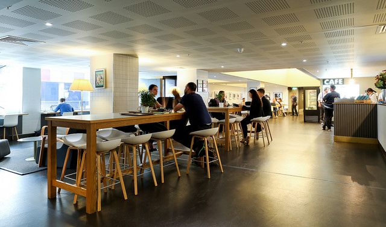

Top 10 Places to Work in London
Google Campus
Essay due, but housemates driving you crazy at home? Bored of missing out on the best spot in your uni library? We're about to blow your mind with a little piece of information that'll change you life: there is a space in Shoreditch that is NOT dedicated to boozing, curry or vintage clothing - but working. And working hard.That place is Google Campus - an amazing, FREE workspace in the heart of London's digital hub with seven floors of super speedy Wifi, a decent cafe, and plenty of young students and entrepreneur types to chat to when you can stare at a screen no more. Simply sign up and head over - sorted.

Friends Of Ours
This student-friendly cafe has just opened in the quietly trendy corner of East London that is Hoxton - it's a great place to hide away with your books for a few hours (grab one of the comfy alcoves before they're gone) before treating yourself to a wander in the vintage shops or a lovely bunch of flowers at Columbia Road flower market.
V&A National Art Library
Open free to the public as a reference library, this beautiful airy space has huge windows looking out over pretty gardens (perfect for collecting your thoughts when you need a break from the screen) seriously beautiful architecture and thousands of authentic books and curios to get the creative juices flowing. You’ll need to register as a reader to gain access to make sure your bring along a form of ID.
Reading Room at the British Museum
Studying under the huge papier-mâché (yep, really) roof in the centre of the Great Court of the British Museum, you'll be in good company. Karl Marx, Mahatma Gandhi, Rudyard Kipling, Lenin, H.G Wells and Oscar Wilde make up just some of its past visitors - history is in the air and if that's not enough to inspire you, we're not sure what can. Be sure to register before you go, though - such amazing credentials mean everyone wants their turn at writing the next classic.
Sky garden
Take advantage of London’s fetish for skyscrapers by working from a top floor. Forget the Shard, it costs £26 to get upstairs. Instead, head to 20 Fenchurch Street, better known as the car-melting Walkie Talkie. Its so-called Sky Garden is more a collection of potted plants than true green space, but costs nothing to ascend, has free Wi-Fi, a coffee shop, restaurants, and power points. You’ll need to book ahead here and subject yourself to a security screening, but your screen breaks will be an epic view of London.
Timberyard
They define themselves as an “independent creative workspace fused with speciality tea and coffee” and they’re right! It’s easy to see people working or studying with their laptops in a relaxed manner, in all of its 3 locations: (i) Soho in 4 Noel Street, London, W1F 8GB, (ii) 61-67 Old Street, EC1V 9HW and (iii) Seven Dials in 7 Upper St Martin’s Lane, WC2H 9DL.
The Book Club, Shoreditch
Not only a cafe, but an institute which helped shape the Shoreditch culture we see everywhere in London. It’s large, bright, airy and has a good wifi. The waiters are amazing and the food (the kitchen is run by some super cool chefs) is fairly priced and yummy. Note that they also serve alcohol (it turns into a bar and later a club) so towards the evening it could get busy. The have hosted the Wall Street Journal Tech Cafe so they are very friendly towards people who want to work.
The Barbican Centre
Not only can you get free super-fast wifi, a cup of tea for £1.70 and plenty of plug sockets for your laptop, you can sit here and work for hours on end, without having to pay a penny.
It’s also open until 11pm every night (even on bank holidays) and it’s quiet enough to work there on a weekend, too (check out some of the higher levels if the ground floor is a bit busy). I like wandering up to the library to clear my head when I fancy a break.

Gardens and parks
When the weather is nice, why not sit down on the grass of any park in London? We especially recommend Hyde Park. Just take your bag, some food and drink to be inspired whilst studying in London.
Ace Hotel
This workspace is located in the lobby of the Ace Hotel, following a trend of London hotels setting up a communal workspace. The best thing about this space is that it’s open 24 hours, so you can get to work any time with free wifi. The way the space is designed is that it’s made into different zones with furniture, glass, or steel screens as partitions. Its great for meetings as there’s a long 16-seat table and if you feel like you’ve worked hard enough for the day then make your way over to the bar and enjoy a much deserved drink! There is also a room at the back where we at Locappy have enjoyed some World Cup matches. We definitely think this is one of the best places to work in Shoreditch as it has both a relaxed and chill feel.